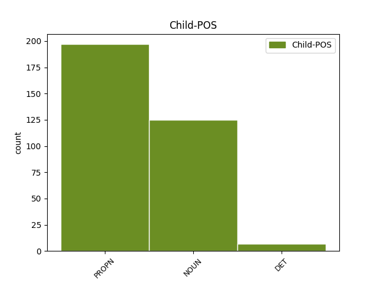

Distribution of features within this leaf

Agreement Rules sorted by frequency.
- When the dependent token is the modifer(mod) of the head token, and the head token is PROPN and the dependent token is NOUN.
1 Již _ _ _ _ 0 _ _ _
2 předtím _ _ _ _ 0 _ _ _
3 studovala _ _ _ _ 0 _ _ _
4 rozptyl _ _ _ _ 0 _ _ _
5 částic _ _ _ _ 0 _ _ _
6 paní paní NOUN NNFS1-----A---- Case=Nom|Gender=Fem|Number=Sing|Polarity=Pos 7 mod _ _
7 Curieová Curieová PROPN NNFS1-----A---- Case=Nom|Gender=Fem|NameType=Sur|Number=Sing|Polarity=Pos 0 _ _ _
8 - _ _ _ _ 0 _ _ _
9 Sklodowská _ _ _ _ 0 _ _ _
10 v _ _ _ _ 0 _ _ _
11 Paříži _ _ _ _ 0 _ _ _
12 . _ _ _ _ 0 _ _ _
1 Zde _ _ _ _ 0 _ _ _
2 Rena Rena PROPN NNFS1-----A---- Case=Nom|Gender=Fem|NameType=Oth|Number=Sing|Polarity=Pos 0 _ _ _
3 , _ _ _ _ 0 _ _ _
4 zde _ _ _ _ 0 _ _ _
5 Rena Rena PROPN NNFS1-----A---- Case=Nom|Gender=Fem|NameType=Oth|Number=Sing|Polarity=Pos 2 orphan _ SpaceAfter=No
6 . _ _ _ _ 0 _ _ _
1 Jmenuje _ _ _ _ 0 _ _ _
2 se _ _ _ _ 0 _ _ _
3 Opaxit Opaxit PROPN NNIS1-----A---- Animacy=Inan|Case=Nom|Gender=Masc|NameType=Pro|Number=Sing|Polarity=Pos 4 mod _ _
4 Miropak Miropak PROPN NNIS1-----A---- Animacy=Inan|Case=Nom|Gender=Masc|NameType=Pro|Number=Sing|Polarity=Pos 0 _ _ _
5 . _ _ _ _ 0 _ _ _
1 Vyvrácení _ _ _ _ 0 _ _ _
2 Popperovy _ _ _ _ 0 _ _ _
3 teze _ _ _ _ 0 _ _ _
4 o _ _ _ _ 0 _ _ _
5 zásadní _ _ _ _ 0 _ _ _
6 disjunkci _ _ _ _ 0 _ _ _
7 mezi _ _ _ _ 0 _ _ _
8 teorií _ _ _ _ 0 _ _ _
9 a _ _ _ _ 0 _ _ _
10 praxí _ _ _ _ 0 _ _ _
11 spolu _ _ _ _ 0 _ _ _
12 s _ _ _ _ 0 _ _ _
13 popřením _ _ _ _ 0 _ _ _
14 jeho _ _ _ _ 0 _ _ _
15 subjektivně _ _ _ _ 0 _ _ _
16 idealistického _ _ _ _ 0 _ _ _
17 gnoseologického _ _ _ _ 0 _ _ _
18 východiska _ _ _ _ 0 _ _ _
19 ve _ _ _ _ 0 _ _ _
20 věci _ _ _ _ 0 _ _ _
21 předmětnosti _ _ _ _ 0 _ _ _
22 lidského _ _ _ _ 0 _ _ _
23 poznání _ _ _ _ 0 _ _ _
24 nutno _ _ _ _ 0 _ _ _
25 ipsofacto _ _ _ _ 0 _ _ _
26 vztáhnout _ _ _ _ 0 _ _ _
27 také _ _ _ _ 0 _ _ _
28 na _ _ _ _ 0 _ _ _
29 ony _ _ _ _ 0 _ _ _
30 dílčí _ _ _ _ 0 _ _ _
31 poznatky _ _ _ _ 0 _ _ _
32 sociálního _ _ _ _ 0 _ _ _
33 výzkumu _ _ _ _ 0 _ _ _
34 a _ _ _ _ 0 _ _ _
35 teoretického _ _ _ _ 0 _ _ _
36 poznání _ _ _ _ 0 _ _ _
37 , _ _ _ _ 0 _ _ _
38 které _ _ _ _ 0 _ _ _
39 , _ _ _ _ 0 _ _ _
40 jak _ _ _ _ 0 _ _ _
41 tvrdí _ _ _ _ 0 _ _ _
42 sám sám DET PLYS1---------- Case=Nom|Gender=Masc|Number=Sing|PronType=Emp 43 comp:pred _ LGloss=(samotný)
43 Popper Popper PROPN NNMS1-----A---- Animacy=Anim|Case=Nom|Gender=Masc|NameType=Sur|Number=Sing|Polarity=Pos 0 _ _ _
44 , _ _ _ _ 0 _ _ _
45 mohou _ _ _ _ 0 _ _ _
46 pomáhat _ _ _ _ 0 _ _ _
47 jednání _ _ _ _ 0 _ _ _
48 , _ _ _ _ 0 _ _ _
49 mohou _ _ _ _ 0 _ _ _
50 modifikovat _ _ _ _ 0 _ _ _
51 naše _ _ _ _ 0 _ _ _
52 jednání _ _ _ _ 0 _ _ _
53 a _ _ _ _ 0 _ _ _
54 předjímat _ _ _ _ 0 _ _ _
55 neočekávané _ _ _ _ 0 _ _ _
56 důsledky _ _ _ _ 0 _ _ _
57 našich _ _ _ _ 0 _ _ _
58 činů _ _ _ _ 0 _ _ _
59 . _ _ _ _ 0 _ _ _
1 Většinou _ _ _ _ 0 _ _ _
2 se _ _ _ _ 0 _ _ _
3 používá _ _ _ _ 0 _ _ _
4 školního _ _ _ _ 0 _ _ _
5 refraktoru _ _ _ _ 0 _ _ _
6 , _ _ _ _ 0 _ _ _
7 výrobku _ _ _ _ 0 _ _ _
8 firmy _ _ _ _ 0 _ _ _
9 Carl Carl PROPN NNMS1-----A---- Animacy=Anim|Case=Nom|Gender=Masc|NameType=Giv|Number=Sing|Polarity=Pos 0 _ _ _
10 Zeiss _ _ _ _ 0 _ _ _
11 , _ _ _ _ 0 _ _ _
12 Jena Jena PROPN NNFS1-----A---- Case=Nom|Gender=Fem|NameType=Geo|Number=Sing|Polarity=Pos 9 unk _ SpaceAfter=No
13 , _ _ _ _ 0 _ _ _
14 některé _ _ _ _ 0 _ _ _
15 školní _ _ _ _ 0 _ _ _
16 hvězdárny _ _ _ _ 0 _ _ _
17 mají _ _ _ _ 0 _ _ _
18 pro _ _ _ _ 0 _ _ _
19 hromadnou _ _ _ _ 0 _ _ _
20 výuku _ _ _ _ 0 _ _ _
21 i _ _ _ _ 0 _ _ _
22 dalekohledy _ _ _ _ 0 _ _ _
23 vlastní _ _ _ _ 0 _ _ _
24 výroby _ _ _ _ 0 _ _ _
25 o _ _ _ _ 0 _ _ _
26 průměru _ _ _ _ 0 _ _ _
27 objektivu _ _ _ _ 0 _ _ _
28 kolem _ _ _ _ 0 _ _ _
29 # _ _ _ _ 0 _ _ _
30 * _ _ _ _ 0 _ _ _
31 . _ _ _ _ 0 _ _ _
1 Po _ _ _ _ 0 _ _ _
2 Bergovi _ _ _ _ 0 _ _ _
3 , _ _ _ _ 0 _ _ _
4 Bartókovi _ _ _ _ 0 _ _ _
5 a _ _ _ _ 0 _ _ _
6 Prokofjevovi _ _ _ _ 0 _ _ _
7 museli _ _ _ _ 0 _ _ _
8 tedy _ _ _ _ 0 _ _ _
9 zaznít _ _ _ _ 0 _ _ _
10 i _ _ _ _ 0 _ _ _
11 Stravinskij _ _ _ _ 0 _ _ _
12 , _ _ _ _ 0 _ _ _
13 baletem _ _ _ _ 0 _ _ _
14 Orfeus _ _ _ _ 0 _ _ _
15 koncertně _ _ _ _ 0 _ _ _
16 , _ _ _ _ 0 _ _ _
17 a _ _ _ _ 0 _ _ _
18 Hindemith Hindemith PROPN NNMS1-----A---- Animacy=Anim|Case=Nom|Gender=Masc|NameType=Sur|Number=Sing|Polarity=Pos 0 _ _ _
19 , _ _ _ _ 0 _ _ _
20 symfonie symfonie NOUN NNFS1-----A---- Case=Nom|Gender=Fem|Number=Sing|Polarity=Pos 18 unk _ _
21 Harmonie _ _ _ _ 0 _ _ _
22 světa _ _ _ _ 0 _ _ _
23 na _ _ _ _ 0 _ _ _
24 jedné _ _ _ _ 0 _ _ _
25 straně _ _ _ _ 0 _ _ _
26 a _ _ _ _ 0 _ _ _
27 na _ _ _ _ 0 _ _ _
28 druhé _ _ _ _ 0 _ _ _
29 zase _ _ _ _ 0 _ _ _
30 po _ _ _ _ 0 _ _ _
31 Sukovi _ _ _ _ 0 _ _ _
32 , _ _ _ _ 0 _ _ _
33 Janáčkovi _ _ _ _ 0 _ _ _
34 a _ _ _ _ 0 _ _ _
35 Martinů _ _ _ _ 0 _ _ _
36 přišel _ _ _ _ 0 _ _ _
37 ke _ _ _ _ 0 _ _ _
38 slovu _ _ _ _ 0 _ _ _
39 i _ _ _ _ 0 _ _ _
40 Novák _ _ _ _ 0 _ _ _
41 , _ _ _ _ 0 _ _ _
42 jehož _ _ _ _ 0 _ _ _
43 písňový _ _ _ _ 0 _ _ _
44 cyklus _ _ _ _ 0 _ _ _
45 Údolí _ _ _ _ 0 _ _ _
46 nového _ _ _ _ 0 _ _ _
47 království _ _ _ _ 0 _ _ _
48 měl _ _ _ _ 0 _ _ _
49 sice _ _ _ _ 0 _ _ _
50 barytonista _ _ _ _ 0 _ _ _
51 Tuček _ _ _ _ 0 _ _ _
52 svrchovaně _ _ _ _ 0 _ _ _
53 v _ _ _ _ 0 _ _ _
54 moci _ _ _ _ 0 _ _ _
55 svého _ _ _ _ 0 _ _ _
56 hlasu _ _ _ _ 0 _ _ _
57 , _ _ _ _ 0 _ _ _
58 ale _ _ _ _ 0 _ _ _
59 který _ _ _ _ 0 _ _ _
60 bohužel _ _ _ _ 0 _ _ _
61 vyzněl _ _ _ _ 0 _ _ _
62 v _ _ _ _ 0 _ _ _
63 indiferentní _ _ _ _ 0 _ _ _
64 dynamice _ _ _ _ 0 _ _ _
65 a _ _ _ _ 0 _ _ _
66 v _ _ _ _ 0 _ _ _
67 nezúčastněném _ _ _ _ 0 _ _ _
68 podání _ _ _ _ 0 _ _ _
69 skoro _ _ _ _ 0 _ _ _
70 naprázdno _ _ _ _ 0 _ _ _
71 . _ _ _ _ 0 _ _ _
1 Tak _ _ _ _ 0 _ _ _
2 vysvětluje _ _ _ _ 0 _ _ _
3 například _ _ _ _ 0 _ _ _
4 Sabinu _ _ _ _ 0 _ _ _
5 , _ _ _ _ 0 _ _ _
6 Zeyera _ _ _ _ 0 _ _ _
7 , _ _ _ _ 0 _ _ _
8 Staška _ _ _ _ 0 _ _ _
9 , _ _ _ _ 0 _ _ _
10 tak _ _ _ _ 0 _ _ _
11 dokonale _ _ _ _ 0 _ _ _
12 vystihuje _ _ _ _ 0 _ _ _
13 Boženu Božena PROPN NNFS4-----A---- Case=Acc|Gender=Fem|NameType=Giv|Number=Sing|Polarity=Pos 0 _ _ _
14 Němcovou _ _ _ _ 0 _ _ _
15 jako _ _ _ _ 0 _ _ _
16 ženu žena NOUN NNFS4-----A---- Case=Acc|Gender=Fem|Number=Sing|Polarity=Pos 13 comp:pred _ SpaceAfter=No
17 , _ _ _ _ 0 _ _ _
18 buřičku _ _ _ _ 0 _ _ _
19 společenskou _ _ _ _ 0 _ _ _
20 , _ _ _ _ 0 _ _ _
21 a _ _ _ _ 0 _ _ _
22 to _ _ _ _ 0 _ _ _
23 mu _ _ _ _ 0 _ _ _
24 dovoluje _ _ _ _ 0 _ _ _
25 vidět _ _ _ _ 0 _ _ _
26 a _ _ _ _ 0 _ _ _
27 odhalit _ _ _ _ 0 _ _ _
28 i _ _ _ _ 0 _ _ _
29 její _ _ _ _ 0 _ _ _
30 buřičství _ _ _ _ 0 _ _ _
31 jazykové _ _ _ _ 0 _ _ _
32 a _ _ _ _ 0 _ _ _
33 stylové _ _ _ _ 0 _ _ _
34 , _ _ _ _ 0 _ _ _
35 tak _ _ _ _ 0 _ _ _
36 podává _ _ _ _ 0 _ _ _
37 klíč _ _ _ _ 0 _ _ _
38 k _ _ _ _ 0 _ _ _
39 Šaldovi _ _ _ _ 0 _ _ _
40 , _ _ _ _ 0 _ _ _
41 k _ _ _ _ 0 _ _ _
42 Nejedlému _ _ _ _ 0 _ _ _
43 i _ _ _ _ 0 _ _ _
44 k _ _ _ _ 0 _ _ _
45 Seifertovi _ _ _ _ 0 _ _ _
46 , _ _ _ _ 0 _ _ _
47 Čapkovi _ _ _ _ 0 _ _ _
48 , _ _ _ _ 0 _ _ _
49 Macharovi _ _ _ _ 0 _ _ _
50 . _ _ _ _ 0 _ _ _
1 Žižkov Žižkov PROPN NNIS1-----A---- Animacy=Inan|Case=Nom|Gender=Masc|NameType=Geo|Number=Sing|Polarity=Pos 0 _ _ _
2 , _ _ _ _ 0 _ _ _
3 Holešovice Holešovice PROPN NNFP1-----A---- Case=Nom|Gender=Fem|NameType=Geo|Number=Plur|Polarity=Pos 1 subj _ SpaceAfter=No
4 , _ _ _ _ 0 _ _ _
5 Bubny _ _ _ _ 0 _ _ _
6 a _ _ _ _ 0 _ _ _
7 Libeň _ _ _ _ 0 _ _ _
8 vykazují _ _ _ _ 0 _ _ _
9 naopak _ _ _ _ 0 _ _ _
10 horečný _ _ _ _ 0 _ _ _
11 příliv _ _ _ _ 0 _ _ _
12 obyvatelstva _ _ _ _ 0 _ _ _
13 ještě _ _ _ _ 0 _ _ _
14 v _ _ _ _ 0 _ _ _
15 prvém _ _ _ _ 0 _ _ _
16 desetiletí _ _ _ _ 0 _ _ _
17 # _ _ _ _ 0 _ _ _
18 století _ _ _ _ 0 _ _ _
19 . _ _ _ _ 0 _ _ _
1 De _ _ _ _ 0 _ _ _
2 Saussurův _ _ _ _ 0 _ _ _
3 imanentismus _ _ _ _ 0 _ _ _
4 nalezl _ _ _ _ 0 _ _ _
5 nejen _ _ _ _ 0 _ _ _
6 kritiku _ _ _ _ 0 _ _ _
7 v _ _ _ _ 0 _ _ _
8 řadách _ _ _ _ 0 _ _ _
9 vědců _ _ _ _ 0 _ _ _
10 , _ _ _ _ 0 _ _ _
11 kteří _ _ _ _ 0 _ _ _
12 zdůrazňovali _ _ _ _ 0 _ _ _
13 společenské _ _ _ _ 0 _ _ _
14 funkce _ _ _ _ 0 _ _ _
15 jazyka _ _ _ _ 0 _ _ _
16 , _ _ _ _ 0 _ _ _
17 ale _ _ _ _ 0 _ _ _
18 také _ _ _ _ 0 _ _ _
19 neopozitivisticky _ _ _ _ 0 _ _ _
20 vyhraněné _ _ _ _ 0 _ _ _
21 pokračování _ _ _ _ 0 _ _ _
22 u _ _ _ _ 0 _ _ _
23 dánského _ _ _ _ 0 _ _ _
24 lingvisty lingvista NOUN NNMS2-----A---- Animacy=Anim|Case=Gen|Gender=Masc|Number=Sing|Polarity=Pos 26 udep _ _
25 * _ _ _ _ 0 _ _ _
26 Hjelmsleva Hjelmslev PROPN NNMS2-----A---- Animacy=Anim|Case=Gen|Gender=Masc|NameType=Sur|Number=Sing|Polarity=Pos 0 _ _ _
27 , _ _ _ _ 0 _ _ _
28 jeho _ _ _ _ 0 _ _ _
29 základní _ _ _ _ 0 _ _ _
30 dílo _ _ _ _ 0 _ _ _
31 z _ _ _ _ 0 _ _ _
32 * _ _ _ _ 0 _ _ _
33 # _ _ _ _ 0 _ _ _
34 vyšlo _ _ _ _ 0 _ _ _
35 pod _ _ _ _ 0 _ _ _
36 názvem _ _ _ _ 0 _ _ _
37 O _ _ _ _ 0 _ _ _
38 základech _ _ _ _ 0 _ _ _
39 teorie _ _ _ _ 0 _ _ _
40 jazyka _ _ _ _ 0 _ _ _
41 v _ _ _ _ 0 _ _ _
42 českém _ _ _ _ 0 _ _ _
43 překladu _ _ _ _ 0 _ _ _
44 v _ _ _ _ 0 _ _ _
45 * _ _ _ _ 0 _ _ _
46 # _ _ _ _ 0 _ _ _
47 , _ _ _ _ 0 _ _ _
48 zakladatele _ _ _ _ 0 _ _ _
49 glosématické _ _ _ _ 0 _ _ _
50 varianty _ _ _ _ 0 _ _ _
51 soudobého _ _ _ _ 0 _ _ _
52 lingvistického _ _ _ _ 0 _ _ _
53 strukturalismu _ _ _ _ 0 _ _ _
54 . _ _ _ _ 0 _ _ _
Disagree Examples:
1 Zajistit _ _ _ _ 0 _ _ _
2 rekonstrukci _ _ _ _ 0 _ _ _
3 objektu _ _ _ _ 0 _ _ _
4 Lázní Lázně PROPN NNFP2-----A---- Case=Gen|Gender=Fem|NameType=Geo|Number=Plur|Polarity=Pos 0 _ _ _
5 Mostek Mostek PROPN NNIS1-----A---- Animacy=Inan|Case=Nom|Gender=Masc|NameType=Geo|Number=Sing|Polarity=Pos 4 mod _ _
6 pro _ _ _ _ 0 _ _ _
7 účely _ _ _ _ 0 _ _ _
8 celopodnikového _ _ _ _ 0 _ _ _
9 školícího _ _ _ _ 0 _ _ _
10 střediska _ _ _ _ 0 _ _ _
11 . _ _ _ _ 0 _ _ _
1 Praha Praha PROPN NNFS1-----A---- Case=Nom|Gender=Fem|NameType=Geo|Number=Sing|Polarity=Pos 0 _ _ _
2 , _ _ _ _ 0 _ _ _
3 # _ _ _ _ 0 _ _ _
4 dubna duben NOUN NNIS2-----A---- Animacy=Inan|Case=Gen|Gender=Masc|Number=Sing|Polarity=Pos 1 unk _ _
5 # _ _ _ _ 0 _ _ _
6 . _ _ _ _ 0 _ _ _
1 Pro _ _ _ _ 0 _ _ _
2 přehled _ _ _ _ 0 _ _ _
3 bychom _ _ _ _ 0 _ _ _
4 potřebovali _ _ _ _ 0 _ _ _
5 znát _ _ _ _ 0 _ _ _
6 počet _ _ _ _ 0 _ _ _
7 účastnic _ _ _ _ 0 _ _ _
8 , _ _ _ _ 0 _ _ _
9 prosíme _ _ _ _ 0 _ _ _
10 o _ _ _ _ 0 _ _ _
11 podání _ _ _ _ 0 _ _ _
12 zprávy _ _ _ _ 0 _ _ _
13 * _ _ _ _ 0 _ _ _
14 Dostálové _ _ _ _ 0 _ _ _
15 do _ _ _ _ 0 _ _ _
16 ČSTSP _ _ _ _ 0 _ _ _
17 na _ _ _ _ 0 _ _ _
18 * _ _ _ _ 0 _ _ _
19 a _ _ _ _ 0 _ _ _
20 nebo _ _ _ _ 0 _ _ _
21 * _ _ _ _ 0 _ _ _
22 Kašparové Kašparová PROPN NNFS3-----A---- Case=Dat|Gender=Fem|NameType=Sur|Number=Sing|Polarity=Pos 0 _ _ _
23 , _ _ _ _ 0 _ _ _
24 TIBA _ _ _ _ 0 _ _ _
25 Slovany Slovany PROPN NNIP1-----A---- Animacy=Inan|Case=Nom|Gender=Masc|NameType=Geo|Number=Plur|Polarity=Pos 22 orphan _ SpaceAfter=No
26 . _ _ _ _ 0 _ _ _
1 V _ _ _ _ 0 _ _ _
2 Praze Praha PROPN NNFS6-----A---- Case=Loc|Gender=Fem|NameType=Geo|Number=Sing|Polarity=Pos 0 _ _ _
3 dne den NOUN NNIS2-----A---- Animacy=Inan|Case=Gen|Gender=Masc|Number=Sing|Polarity=Pos 2 unk _ LGloss=(jednotka_času)
4 # _ _ _ _ 0 _ _ _
5 října _ _ _ _ 0 _ _ _
6 . _ _ _ _ 0 _ _ _
1 Subdodávky _ _ _ _ 0 _ _ _
2 , _ _ _ _ 0 _ _ _
3 pohledávky _ _ _ _ 0 _ _ _
4 , _ _ _ _ 0 _ _ _
5 závazky _ _ _ _ 0 _ _ _
6 a _ _ _ _ 0 _ _ _
7 dluhy _ _ _ _ 0 _ _ _
8 k _ _ _ _ 0 _ _ _
9 # _ _ _ _ 0 _ _ _
10 provedou _ _ _ _ 0 _ _ _
11 Houdková _ _ _ _ 0 _ _ _
12 , _ _ _ _ 0 _ _ _
13 Baštová _ _ _ _ 0 _ _ _
14 , _ _ _ _ 0 _ _ _
15 Nová _ _ _ _ 0 _ _ _
16 , _ _ _ _ 0 _ _ _
17 zůstatky _ _ _ _ 0 _ _ _
18 bankovních _ _ _ _ 0 _ _ _
19 účtů _ _ _ _ 0 _ _ _
20 k _ _ _ _ 0 _ _ _
21 # _ _ _ _ 0 _ _ _
22 provedou _ _ _ _ 0 _ _ _
23 Liegrová _ _ _ _ 0 _ _ _
24 , _ _ _ _ 0 _ _ _
25 Baštová _ _ _ _ 0 _ _ _
26 , _ _ _ _ 0 _ _ _
27 pokladna _ _ _ _ 0 _ _ _
28 a _ _ _ _ 0 _ _ _
29 ceniny _ _ _ _ 0 _ _ _
30 k _ _ _ _ 0 _ _ _
31 # _ _ _ _ 0 _ _ _
32 provedou _ _ _ _ 0 _ _ _
33 v _ _ _ _ 0 _ _ _
34 Praze _ _ _ _ 0 _ _ _
35 Baštová _ _ _ _ 0 _ _ _
36 , _ _ _ _ 0 _ _ _
37 Houdková _ _ _ _ 0 _ _ _
38 , _ _ _ _ 0 _ _ _
39 v _ _ _ _ 0 _ _ _
40 Brně Brno PROPN NNNS6-----A---- Case=Loc|Gender=Neut|NameType=Geo|Number=Sing|Polarity=Pos 0 _ _ _
41 Němec Němec PROPN NNMS1-----A---- Animacy=Anim|Case=Nom|Gender=Masc|NameType=Sur|Number=Sing|Polarity=Pos 40 orphan _ LId=Němec-1|SpaceAfter=No
42 , _ _ _ _ 0 _ _ _
43 Kovaříková _ _ _ _ 0 _ _ _
44 . _ _ _ _ 0 _ _ _